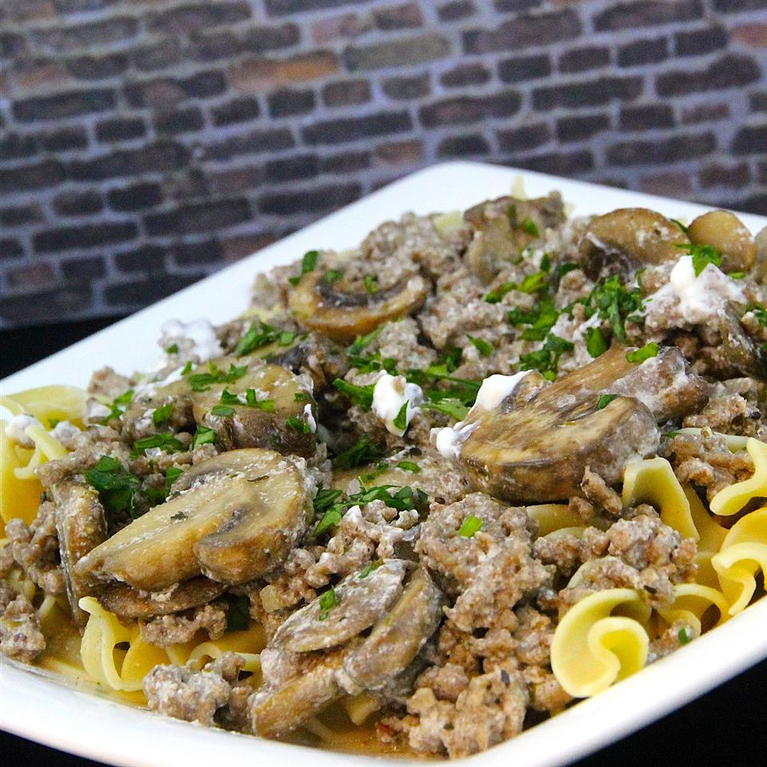

Poor Man's Stroganoff

Here's The Recipe!
It should only take about 30 minutes to make. Prep time takes about 10 minutes and then 20 minutes left to cook. Not only does it not take long but it feeds a family of 4!
Ingredients
- 1 (12 ounce) package egg noodles
- 1 pound ground beef
- 1 teaspoon Greek seasoning (such as Cavender's®)
- salt and ground black pepper to taste
- 1 teaspoon vegetable oil
- 1 (16 ounce) package sliced fresh mushrooms
- 1 pint sour cream
Steps
- Bring a large pot of lightly salted water to a boil. Cook egg noodles in the boiling water, stirring occasionally, until cooked through but firm to the bite, about 5 minutes; drain.
- Heat a large skillet over medium-high heat. Cook and stir beef in the hot skillet until browned and crumbly, 5 to 7 minutes; drain and discard grease. Season beef with Greek seasoning, salt, and pepper.
- Heat vegetable oil in a separate skillet over medium heat. Cook and stir mushrooms in hot oil until tender, about 5 minutes; add to ground beef.
- Stir sour cream into ground beef mixture; cook and stir until hot, about 5 minutes. Serve over egg noodles.
Per Serving: 810 calories; protein 38.2g; carbohydrates 68.8g; fat 43.1g; cholesterol 192.1mg; sodium 268.1mg.
Click Me To Go Back To The Recipe List